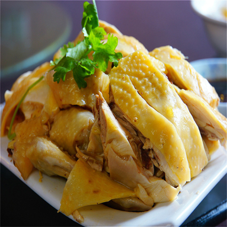

| 舌尖上的美食首页 | 菜谱 | 食材 | 珍选 | 家乡菜 | 活动 | 搜索 | 注册 | 登录 | QQ登录 | 签到有礼 | 客户端 |
“三黄鸡”的名字由朱元璋钦赐。在国家农业部权威典籍《中国家禽志》一书中排名首位，该鸡属农户大自然放养。其肉质细嫩，味道鲜美，营养丰富，在国内外享有较高的声誉。具有体型小、外貌“三黄”（羽毛黄、爪黄、喙黄）、生存能力强、产蛋量高、肉质鲜嫩等优良特点，普遍饲养的家鸡品种，因黄羽、黄喙、黄脚得名。成年鸡体重约3-4斤，鸡肉质嫩滑，皮脆骨软，脂肪丰满和味道鲜美。从而得到全世界的认可，三黄鸡是我国最著名的土鸡之一。
|
| ⊙靓菜上桌 | ||
| 岑溪三黄鸡是具有地方特色的传统名鸡，是广西历史上四大名鸡之一，此鸡是由一种野鸡长期驯养而成。1977年广西外贸系统在灵山以统一加工，不标名现场品尝的方法，对全省16个肉鸡品种进行品尝评比，最终品尝者认为肉质最佳的是岑溪三黄鸡；1993年广西外贸系统又在南宁西园饭店，邀请香港九龙一带有几十年经营家禽经验的商人，对全省16个供港活鸡品种进行外表评定，商人们一致认为岑溪三黄鸡和贺县的信都鸡为最佳品种；同年在北京《全国出口商品生产基地专厂建设成果展览会》上展出，又受到对外经济贸易部领导赞誉和好评，并向岑溪人民政府颁发荣誉证书，为了全方位开发这个优良的地方品种，岑溪外贸鸡场于1983年起，对岑溪三黄鸡进行开发，1987年起，连续七年对其进行严格的系统选育。经过系统选育的岑溪三黄鸡，全面保留古典型的体型、外貌和肉质的特色，型、色、香、味俱臻一流，是广西唯一经过系统选育的地方土鸡。目前岑溪市外贸鸡场把选育后的岑溪三黄鸡放到果园、林区、山地进行放牧饲养，用传统的饲料喂养，所养出的肉鸡与传统的放养鸡保持了一致的特色，是制作白切鸡的最佳品种，曾得到广州十大名厨白天鹅宾馆中厨总监庄伟佳先生的赞誉。(岑溪) 古典型岑溪三黄鸡因为品质优良，于2003年被评为“广西优质产品”，2006年被评为“广西名牌产品”，2008年在“梧州市十个最好吃的美食”评选中排名第一，2010年被评为“广西优质农产品”，2005年起连续被农业部农产品质量安全中心认定为“国家无公害农产品”，2010年荣获首届中国地方鸡（土鸡）金牌名鸡称号，2011年7月在广州“百鸡宴暨粤菜文化推广活动”中，被评为“优质名牌鸡”，同月在广西水畜牧品牌产品北京推介会上，被评为“广西水产畜牧品牌北京推介会最佳品牌产品”。 由于古典型岑溪三黄鸡的型、色、香、味俱瑧一流，特别是用古典型岑溪三黄鸡制作的“水蒸鸡”具有独特的风味，深受人们青睐。 |
||
|  | ||